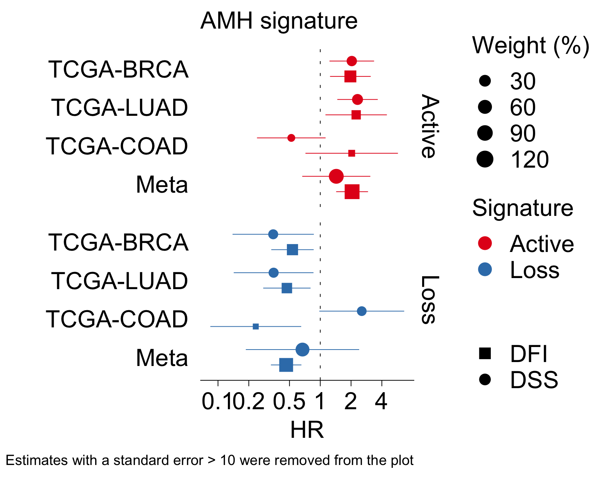
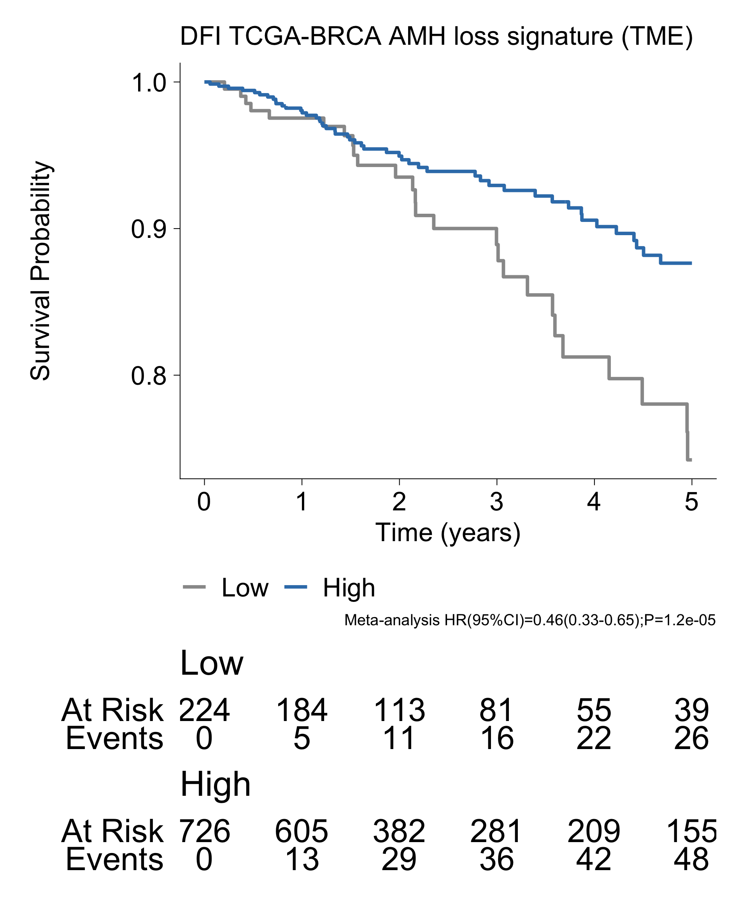
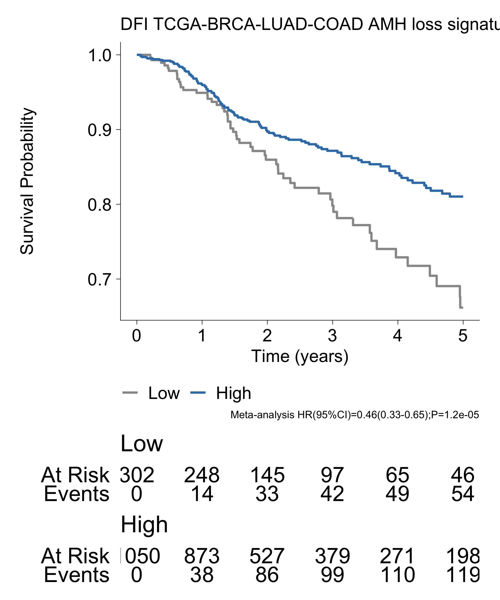

Survival analysis in TCGA
Amhr2 KO signatures
Francesc Castro-Giner
July 01, 2025
Last updated: 2025-07-01
Checks: 7 0
Knit directory: saini-stealTHY/
This reproducible R Markdown analysis was created with workflowr (version 1.7.1). The Checks tab describes the reproducibility checks that were applied when the results were created. The Past versions tab lists the development history.
Great! Since the R Markdown file has been committed to the Git repository, you know the exact version of the code that produced these results.
Great job! The global environment was empty. Objects defined in the global environment can affect the analysis in your R Markdown file in unknown ways. For reproduciblity it’s best to always run the code in an empty environment.
The command set.seed(20240517) was run prior to running
the code in the R Markdown file. Setting a seed ensures that any results
that rely on randomness, e.g. subsampling or permutations, are
reproducible.
Great job! Recording the operating system, R version, and package versions is critical for reproducibility.
Nice! There were no cached chunks for this analysis, so you can be confident that you successfully produced the results during this run.
Great job! Using relative paths to the files within your workflowr project makes it easier to run your code on other machines.
Great! You are using Git for version control. Tracking code development and connecting the code version to the results is critical for reproducibility.
The results in this page were generated with repository version 2d1b5a6. See the Past versions tab to see a history of the changes made to the R Markdown and HTML files.
Note that you need to be careful to ensure that all relevant files for
the analysis have been committed to Git prior to generating the results
(you can use wflow_publish or
wflow_git_commit). workflowr only checks the R Markdown
file, but you know if there are other scripts or data files that it
depends on. Below is the status of the Git repository when the results
were generated:
Ignored files:
Ignored: .DS_Store
Ignored: .Rhistory
Ignored: .Rproj.user/
Ignored: analysis/.DS_Store
Ignored: code/.DS_Store
Ignored: code/raw_data_processing/rnaseq/p27851_o32062/pipelines/
Ignored: configuration/.DS_Store
Ignored: data/.DS_Store
Ignored: data/crispr/
Ignored: data/resources/
Ignored: data/rnaseq/
Ignored: output/.DS_Store
Ignored: output/clinical/
Ignored: output/crispr/
Ignored: output/rnaseq/
Untracked files:
Untracked: analysis/crispr-hsapiens_2180_sgRNA_r1.Rmd
Untracked: analysis/crispr-mm_2215_sgRNA-CMT167-LLC1-CT26.Rmd
Untracked: analysis/crispr-mm_2215_sgRNA-clonality_r1.Rmd
Untracked: analysis/crispr-mm_2215_sgRNA-r2oD_r1.Rmd
Untracked: analysis/crispr-muller-mm_2215_sgRNA.Rmd
Untracked: analysis/rnaseq-amhr2_ko-deg.Rmd
Untracked: analysis/templates/
Untracked: code/R-functions/subchunkify.R
Unstaged changes:
Modified: .gitignore
Modified: analysis/crispr-hsapiens_2180_sgRNA.Rmd
Modified: analysis/crispr-mm_2215_sgRNA-StealTHY.Rmd
Modified: analysis/crispr-mm_2215_sgRNA-clonality.Rmd
Modified: analysis/crispr-mm_2215_sgRNA-r2oC.Rmd
Modified: analysis/rnaseq-tumor-bulk.Rmd
Modified: analysis/rnaseq-tumor-facs-cancer.Rmd
Modified: analysis/rnaseq-tumor-facs-immune.Rmd
Modified: code/R-functions/gse_report.r
Modified: configuration/rmarkdown/ggplot_theme.R
Modified: update_workflowr.R
Note that any generated files, e.g. HTML, png, CSS, etc., are not included in this status report because it is ok for generated content to have uncommitted changes.
These are the previous versions of the repository in which changes were
made to the R Markdown
(analysis/tcga_survival_amhr2_ko_signatures.Rmd) and HTML
(docs/tcga_survival_amhr2_ko_signatures.html) files. If
you’ve configured a remote Git repository (see
?wflow_git_remote), click on the hyperlinks in the table
below to view the files as they were in that past version.
| File | Version | Author | Date | Message |
|---|---|---|---|---|
| Rmd | 2d1b5a6 | Francesc Castro-Giner | 2025-07-01 | add tcga analysis |
1 Load libraries, additional functions and data
Setup environment
knitr::opts_chunk$set(results='asis', echo=TRUE, message=FALSE, warning=FALSE, error=FALSE, fig.align = 'center', fig.width = 3.5, fig.asp = 0.618, dpi = 600, dev = c("png", "pdf"), engine.opts = list(bash = "-l"))
options(stringsAsFactors = FALSE)
use_seed <- 1100101
set.seed(use_seed)
dir.create(params$output_dir, recursive = TRUE, showWarnings = FALSE)Load packages
library(tidyverse)
library(knitr)
# library(showtext)
library(foreach)
library(SummarizedExperiment)
library(survival)
library(gtsummary)
library(ggsurvfit)
library(survminer)
library(meta)
library(magrittr)
# library(DT)
# library(colorblindr)
# library(ggdendro)
# library(RColorBrewer)
# library(circlize)
# library(Hmisc)
# library(ComplexHeatmap)
# library(ineq)
library(kableExtra)
library(openxlsx)
# library(magrittr)
# library(ggrepel)
# library(ggpubr)
# library(ggbeeswarm)
# library(ggridges)
# library(openxlsx)
# library(MAGeCKFlute)
library(GSVA)Load ggplot theme
source("./configuration/rmarkdown/ggplot_theme.R")Clean files generated in previous runs
rmd_file <- current_input()
if(!is.null(rmd_file)) {
figures_dir <- file.path('./docs/figure',rmd_file)
if(dir.exists(figures_dir)) {
unlink(file.path(figures_dir, "*"))
}
}2 Generate signatures
Load data
# Load DGE results
dge_list <- readRDS('./output/rnaseq/amhr2_ko/dge-edgeR_QLF.rds')
# Select comparisons
use_comp <- c("i_AMHR2_KO-o-i_ctrl_sgRNA", "c_AMHR2_KO-o-c_AMHR2_ctrl", "AMHR2_KO-o-ctrl")
dge_list <- dge_list[use_comp]Extract top-100 genes for each comparison and direction (up, down) based on FDR and FC
i <- dge_list[[1]]
dge_up_fdr <- foreach(i = dge_list) %do% {
i$results %>%
filter(FDR < 0.001) %>%
filter(logFC > 1) %>%
arrange(FDR) %>%
head(100) %>%
pull(gene_name)
}
names(dge_up_fdr) <- names(dge_list) %>% gsub(".o.*", "", .) %>% paste0("up_fdr_", .)
i <- dge_list[[1]]
dge_down_fdr <- foreach(i = dge_list) %do% {
i$results %>%
filter(FDR < 0.001) %>%
filter(logFC < -1) %>%
arrange(FDR) %>%
head(100) %>%
pull(gene_name)
}
names(dge_down_fdr) <- names(dge_list) %>% gsub(".o.*", "", .) %>% paste0("down_fdr_", .)
i <- dge_list[[1]]
dge_up_fc <- foreach(i = dge_list) %do% {
i$results %>%
filter(FDR < 0.001) %>%
filter(logFC > 1) %>%
arrange(desc(logFC)) %>%
head(100) %>%
pull(gene_name)
}
names(dge_up_fc) <- names(dge_list) %>% gsub(".o.*", "", .) %>% paste0("up_fc_", .)
i <- dge_list[[1]]
dge_down_fc <- foreach(i = dge_list) %do% {
i$results %>%
filter(FDR < 0.001) %>%
filter(logFC < -1) %>%
arrange(logFC) %>%
head(100) %>%
pull(gene_name)
}
names(dge_down_fc) <- names(dge_list) %>% gsub(".o.*", "", .) %>% paste0("down_fc_", .)
dge_signatures_mm <- c(dge_up_fdr, dge_down_fdr, dge_up_fc, dge_down_fc)Convert to genes to from mouse to human orthologs
library(biomaRt)
use_mart <- useMart("ensembl", dataset = "mmusculus_gene_ensembl")
attributes<- c("external_gene_name",
"hsapiens_homolog_ensembl_gene",
"hsapiens_homolog_associated_gene_name",
"hsapiens_homolog_orthology_type",
"hsapiens_homolog_perc_id_r1")
orth_info <- getBM(attributes, filters="with_hsapiens_homolog",
values=TRUE, mart = use_mart, uniqueRows=TRUE)
i <- dge_signatures_mm[[1]]
dge_signatures <- foreach(i = dge_signatures_mm) %do% {
orth_info %>% filter(external_gene_name %in% i) %>% pull(hsapiens_homolog_associated_gene_name)
}
names(dge_signatures) <- names(dge_signatures_mm)
saveRDS(dge_signatures, file = file.path(params$output_dir, 'dge_signatures.rds'))Load signatures
dge_signatures <- readRDS(file.path(params$output_dir, 'dge_signatures.rds'))3 Gene signatures
# File name summary
rmd_file <- current_input()
if(is.null(rmd_file))
rmd_file <- 'tmp'
file_xlsx <- file.path('./docs/file',rmd_file, 'dge_signatures.xlsx')
dir.create(dirname(file_xlsx), recursive = TRUE, showWarnings = FALSE)
# Generate workbook
wb <- createWorkbook()
for(i in names(dge_signatures)) {
addWorksheet(wb, i)
res <- dge_signatures[[i]] %>% data.frame %>%
set_names('Gene') %>%
filter(Gene != '')
writeData(wb, i, res)
}
saveWorkbook(wb, file_xlsx, TRUE)
dge_file_xlsx <- file_xlsxYou can download the list of genes per signature using the following link:
Below you will find a summary table with the number of genes for each signature.
lapply(dge_signatures, function(x) length(x[x!=''])) %>%
data.frame(check.names = FALSE) %>%
t() %>%
data.frame(check.names = FALSE) %>%
set_names('Number of genes') %>%
rownames_to_column('signature') %>%
kbl(caption = 'Number of genes by signaure') %>%
kable_paper(bootstrap_options = c("striped", "hover", "condensed"), full_width = F)| signature | Number of genes |
|---|---|
| up_fdr_i_AMHR2_KO | 94 |
| up_fdr_c_AMHR2_KO | 100 |
| up_fdr_AMHR2_KO | 89 |
| down_fdr_i_AMHR2_KO | 94 |
| down_fdr_c_AMHR2_KO | 96 |
| down_fdr_AMHR2_KO | 91 |
| up_fc_i_AMHR2_KO | 73 |
| up_fc_c_AMHR2_KO | 81 |
| up_fc_AMHR2_KO | 73 |
| down_fc_i_AMHR2_KO | 74 |
| down_fc_c_AMHR2_KO | 92 |
| down_fc_AMHR2_KO | 107 |
4 Run survival analysis
project_id <- list.files(
path = params$data_dir,
pattern = 'TCGA-[A-Z]+.rds$'
) %>%
gsub(".rds", "", .)
tcga_selected <- c('BRCA', 'LUAD', 'COAD') %>%
paste('TCGA', ., sep = '-')
project_id <- intersect(project_id, tcga_selected)
surv_endpoints <- list(
DSS = list(
time_var = 'DSS.time',
event_var = 'DSS'
),
DFI = list(
time_var = 'DFI.time',
event_var = 'DFI'
)
)Load raw data, and create SummarizedExperiments with signatures for each project.
i <- project_id[1]
data_se <- foreach(i = project_id) %do% {
cat("### ", i, "\n\n")
se <- readRDS(file.path(params$data_dir, paste0(i, '.rds')))
# Remove duplicated samples: https://ucsc-xena.gitbook.io/project/how-do-i/how-do-i-remove-duplicate-samples-from-a-km-plot
sample_annot <- colData(se) %>% data.frame %>%
filter(sample_type == 'Primary Tumor')
# Filter samples
se <- se[, rownames(sample_annot)]
# Run GSVA
use_assay <- edgeR::cpm(assay(se, 'normcounts'), log = TRUE)
gsvapar <- gsvaParam(
use_assay,
dge_signatures,
kcdf = "Gaussian",
maxDiff = TRUE
)
gsva_res <- gsva(gsvapar,
verbose = FALSE)
# Generate SummarizedExperiment object using GSVA matrix
se <- SummarizedExperiment(
assays = list(gsva = gsva_res),
colData = colData(se)
)
se
}
names(data_se) <- project_id
# Remove NULL elements
data_se <- compact(data_se)
data_se <- data_se[!sapply(data_se, is.null)]
saveRDS(data_se, file = file.path(params$output_dir, 'data_se_signatures.rds'))Pool data from multiple studies
data_se <- readRDS(file.path(params$output_dir, 'data_se_signatures.rds'))
# Combine projects for pooled survival analysis
se1 <- data_se[["TCGA-BRCA"]]
se2 <- data_se[["TCGA-LUAD"]]
se3 <- data_se[["TCGA-COAD"]]
use_cols <- intersect(colnames(colData(se1)), colnames(colData(se2))) %>%
intersect(., colnames(colData(se3)))
colData(se1) <- colData(se1)[,use_cols]
colData(se2) <- colData(se2)[,use_cols]
colData(se3) <- colData(se3)[,use_cols]
data_se[["TCGA-BRCA-LUAD-COAD"]] <- cbind(se1, se2, se3)
saveRDS(data_se, file = file.path(params$output_dir, 'data_se_signatures.rds'))For each SummarizedExperiments, we set up the follow-up limit and configure survival variable. Remove studies with less than 3 events and 20 patients with survival data
data_se_signatures <- readRDS(file.path(params$output_dir, 'data_se_signatures.rds'))
data_se <- foreach(surv_i = surv_endpoints) %do% {
res <- foreach(se = data_se_signatures) %do% {
# Set survival variables and follow up limit
sample_annot <- colData(se) %>% data.frame()
sample_annot$status <- sample_annot[[surv_i$event_var]]
sample_annot$time <- sample_annot[[surv_i$time_var]]/365.25
sample_annot <- sample_annot %>%
mutate(
status = ifelse(time >= params$max_time_years, 0, status),
time = ifelse(time >= params$max_time_years, params$max_time_years, time)
)
colData(se) <- DataFrame(sample_annot)
# Number of events
n_surv_data <- sum(!is.na(se$status))
n_events <- sum(se$status, na.rm = TRUE)
if(ncol(se) > 0 & n_events >= params$min_event_n & n_surv_data >= params$min_surv_n) {
se
} else {
NULL
}
}
names(res) <- names(data_se_signatures)
res
}
names(data_se) <- names(surv_endpoints)
# Remove NULL elements
data_se <- compact(data_se)
data_se <- data_se[!sapply(data_se, is.null)]
saveRDS(data_se, file = file.path(params$output_dir, 'data_se_surv.rds'))Generate data using optimal cutoff point. Cutoff determined using the maximally selected rank statistics from the ‘maxstat’ R package. This is an outcome-oriented methods providing a value of a cutpoint that correspond to the most significant relation with outcome (here, survival).
surv_i <- names(data_se)[1]
surv_maxstat <- foreach(surv_i = names(data_se), .combine = rbind) %do% {
res <- foreach(i = names(data_se[[surv_i]]), .combine = rbind) %do% {
se <- data_se[[surv_i]][[i]]
gene_exp <- assay(se, 'gsva') %>% t()
colnames(gene_exp) <-rownames(se)
sample_annot <- colData(se) %>% data.frame()
# sample_annot$status <- sample_annot[[params$event_var]]
# sample_annot$time <- sample_annot[[params$time_var]]/365.25
# Set follow up limit
# sample_annot <- sample_annot %>%
# mutate(
# status = ifelse(time >= params$max_time_years, 0, status),
# time = ifelse(time >= params$max_time_years, params$max_time_years, time)
# )
# # Keep only genes with expression in at least 20% of samples
# gene_exp_prop <- colSums(gene_exp > 0) / nrow(gene_exp)
# gene_exp <- gene_exp[,gene_exp_prop >= 0.2]
#
res_cut <- surv_cutpoint(cbind(sample_annot, gene_exp),
time = "time", event = "status",
variables = colnames(gene_exp))
res_cat <- surv_categorize(res_cut, labels = c('Low', 'High'))
sample_annot <- cbind(sample_annot, res_cat)
g <- colnames(gene_exp)[1]
foreach(g = colnames(gene_exp), .combine = rbind) %do% {
use_formula <- as.formula(paste0("Surv(time, status) ~ ", g))
cox.res <- coxph(use_formula, data = sample_annot) %>%
tbl_regression(exp = TRUE)
data.frame(
surv_var = surv_i,
project_id = i,
gene_name = g,
HR = cox.res$table_body$estimate[3],
p.value = cox.res$table_body$p.value[3],
std.error = cox.res$table_body$std.error[3],
conf.low = cox.res$table_body$conf.low[3],
conf.high = cox.res$table_body$conf.high[3],
n.low = sum(sample_annot[[g]] == "Low"),
n.high = sum(sample_annot[[g]] == "High")
)
}
}
res
}
saveRDS(surv_maxstat, file = file.path(params$output_dir, 'surv_maxstat.rds'))
survfit_km_maxstat <- foreach(surv_i = names(data_se)) %do% {
res <- foreach(i = names(data_se[[surv_i]])) %do% {
se <- data_se[[surv_i]][[i]]
gene_exp <- assay(se, 'gsva') %>% t()
sample_annot <- colData(se) %>% data.frame()
# sample_annot$status <- sample_annot[[params$event_var]]
# sample_annot$time <- sample_annot[[params$time_var]]/365.25
# Set follow up limit
# sample_annot <- sample_annot %>%
# mutate(
# status = ifelse(time >= params$max_time_years, 0, status),
# time = ifelse(time >= params$max_time_years, params$max_time_years, time)
# )
# # Keep only genes with expression in at least 10% of samples
# gene_exp_prop <- colSums(gene_exp > 0) / nrow(gene_exp)
# gene_exp <- gene_exp[,gene_exp_prop >= 0.2]
res_cut <- surv_cutpoint(cbind(sample_annot, gene_exp),
time = "time", event = "status",
variables = colnames(gene_exp))
res_cat <- surv_categorize(res_cut, labels = c('Low', 'High'))
sample_annot <- cbind(sample_annot, res_cat)
g <- colnames(gene_exp)[1]
res_by_genes <- foreach(g = colnames(gene_exp)) %do% {
use_formula <- as.formula(paste0("Surv(time, status) ~ ", g))
# KM plot
survfit2(use_formula, data = sample_annot) %>%
ggsurvfit() +
add_risktable() +
labs(
x = "Time (years)",
title = i
) +
theme_project +
theme(legend.position="bottom")
}
names(res_by_genes) <- colnames(gene_exp)
res_by_genes
}
names(res) <- names(data_se[[surv_i]])
res
}
names(survfit_km_maxstat) <- names(data_se)
saveRDS(survfit_km_maxstat, file = file.path(params$output_dir, 'survfit_km_maxstat.rds'))Load survival data
data_se <- readRDS(file.path(params$output_dir, 'data_se_signatures.rds'))
surv_maxstat <- readRDS(file.path(params$output_dir, 'surv_maxstat.rds'))
survfit_km_maxstat <- readRDS(file.path(params$output_dir, 'survfit_km_maxstat.rds'))
survfit_km_maxstat_list <- survfit_km_maxstatChange signature names to more readable format
new_signature_names <- c(
up_fc_i_AMHR2_KO = 'AMH loss signature (TME)',
down_fc_c_AMHR2_KO = 'AMH fully active signature'
)
# Select signatures and change names
dge_signatures <- dge_signatures[names(new_signature_names)]
names(dge_signatures) <- new_signature_names
# Modify data
new_data_se <- foreach(i = data_se) %do% {
res <- i[names(new_signature_names),]
rownames(res) <- new_signature_names
res
}
names(new_data_se) <- names(data_se)
data_se <- new_data_se
rm(new_data_se)
res <- surv_maxstat %>%
filter(gene_name %in% names(new_signature_names))
for(i in names(new_signature_names)){
res$gene_name[res$gene_name == i] <- new_signature_names[i]
}
surv_maxstat <- res
new_survfit_km_maxstat<- foreach(surv_i = names(survfit_km_maxstat)) %do% {
res <- foreach(i = names(survfit_km_maxstat[[surv_i]])) %do% {
x <- survfit_km_maxstat[[surv_i]][[i]][names(new_signature_names)]
names(x) <- new_signature_names
x
}
names(res) <- names(survfit_km_maxstat[[surv_i]])
res
}
names(new_survfit_km_maxstat) <- names(survfit_km_maxstat)
survfit_km_maxstat <- new_survfit_km_maxstat
survfit_km_maxstat_list <- survfit_km_maxstatRun metanalysis for survival analysis
## Survival with maxtat
meta_surv_maxstat <- foreach(sv = names(surv_endpoints)) %do% {
res <- foreach(g = unique(surv_maxstat$gene_name)) %do% {
use_surv <- surv_maxstat %>% filter(gene_name == g & surv_var == sv & project_id != 'TCGA-BRCA-LUAD-COAD')
metagen(
HR = log(use_surv$HR),
lower = log(use_surv$conf.low),
upper = log(use_surv$conf.high),
sm = "HR", common=F, random=T,
studlab = use_surv$project_id,
method.tau = "DL", ## method to calculate Tau
method.random.ci = "classic" ## method to calculate estimator's CI
)
}
names(res) <- unique(surv_maxstat$gene_name)
res
}
names(meta_surv_maxstat) <- names(surv_endpoints)
meta_surv_maxstat_summary <- foreach(sv = names(surv_endpoints), .combine = rbind) %do% {
foreach(g = unique(surv_maxstat$gene_name), .combine = rbind) %do% {
x <- summary(meta_surv_maxstat[[sv]][[g]])
data.frame(
surv_var = sv,
project_id = 'Summary',
gene_name = g,
HR = exp(x$random$TE),
p.value = x$random$p,
std.error = x$random$seTE,
conf.low = exp(x$random$lower),
conf.high = exp(x$random$upper)#,
# w.random = round(100*x$w.random / sum(x$w.random), 1)
)
}
}
meta_surv_maxstat_weight <- foreach(sv = names(surv_endpoints), .combine = rbind) %do% {
foreach(g = unique(surv_maxstat$gene_name), .combine = rbind) %do% {
x <- summary(meta_surv_maxstat[[sv]][[g]])
data.frame(
surv_var = sv,
project_id = x$studlab,
gene_name = g,
w.random = round(100*x$w.random / sum(x$w.random), 1)
)
}
}
use_meta_surv <- meta_surv_maxstatuse_surv <- surv_maxstat
use_meta_surv <- meta_surv_maxstat5 Table of results
# File name summary
rmd_file <- current_input()
if(is.null(rmd_file))
rmd_file <- 'tmp'
file_xlsx <- file.path('./docs/file',rmd_file, 'amhr2_signature_surv_maxstat.xlsx')
dir.create(dirname(file_xlsx), recursive = TRUE, showWarnings = FALSE)
# Generate workbook
wb <- createWorkbook()
for(i in unique(use_surv$surv_var)) {
addWorksheet(wb, i)
res <- use_surv %>%
filter(surv_var == i) %>%
dplyr::rename(signature = gene_name) %>%
select(surv_var, everything())
res_meta <- foreach(g = unique(res$signature), .combine = rbind) %do% {
use_meta_sum <- summary(use_meta_surv[[i]][[g]])
data.frame(
project_id = 'Meta',
signature = g,
HR = exp(use_meta_sum$random$TE),
p.value = use_meta_sum$random$p,
std.error = use_meta_sum$random$seTE,
conf.low = exp(use_meta_sum$random$lower),
conf.high = exp(use_meta_sum$random$upper),
surv_var = i
)
}
res <- bind_rows(res, res_meta)
writeData(wb, i, res)
}
saveWorkbook(wb, file_xlsx, TRUE)
dge_file_xlsx <- file_xlsxYou can download the results of the survival analysis using the following link:
6 Figure 7H Left: Forest plot by study
Forest plot showing HR and 95%CI for each study. The size of the circle point is determined by the weight of the effect size in the meta-analysis. The diamond shape at the bottom of the plot represents the average effect calculated using meta-analysis.
chunk_data <- use_surv
meta_weight <- foreach(i = names(use_meta_surv), .combine = rbind) %do% {
foreach(j = names(use_meta_surv[[i]]), .combine = rbind) %do% {
use_meta_sum <- summary(use_meta_surv[[i]][[j]])
data.frame(
surv_var = i,
gene_name = j,
project_id = use_meta_sum$studlab,
w.fixed = use_meta_sum$w.fixed,
w.pct = 100* use_meta_sum$w.fixed / sum(use_meta_sum$w.fixed)
)
}
}
# use_meta_sum <- summary(use_meta)
chunk_data %<>% left_join(meta_weight, by = c('surv_var', 'gene_name', 'project_id'))
cox_meta_add <- foreach(i = names(use_meta_surv), .combine = rbind) %do% {
foreach(g = names(use_meta_surv[[i]]), .combine = rbind) %do% {
use_meta_sum <- summary(use_meta_surv[[i]][[g]])
cox_meta <- data.frame(
project_id = 'Meta',
gene_name = g,
HR = exp(use_meta_sum$random$TE),
p.value = use_meta_sum$random$p,
std.error = use_meta_sum$random$seTE,
conf.low = exp(use_meta_sum$random$lower),
conf.high = exp(use_meta_sum$random$upper),
surv_var = i,
w.fixed = NA,
w.pct = 2*max(chunk_data %>% filter(gene_name == g) %>% pull(w.pct), na.rm = TRUE)
)
cox_empty <- data.frame(
project_id = '',
gene_name = g,
HR = NA,
p.value = 1,
std.error = 0,
conf.low = 1,
conf.high = 1,
surv_var = i,
w.fixed = NA,
w.pct = 0
)
rbind(cox_meta, cox_empty)
}
}
chunk_data %<>%
bind_rows(cox_meta_add) %>%
mutate(
project_id = factor(project_id, levels= c('Meta', '', rev(tcga_selected))),
project_type = ifelse(project_id == 'Meta', 'Meta', 'Project'),
FDR = p.adjust(p.value, method = 'BH'),
logP = -log10(p.value),
logP = ifelse(logP > 10, 10 , logP),
logFDR = -log10(FDR),
logFDR = ifelse(logFDR > 10, 10 , logFDR),
root_signature_name = gsub(" loss| fully active", "", gene_name) %>%
gsub(" active", "", .)
)Add AMH loss signature (TME) as a loss signature for AMH fully active signature
chunk_data %<>%
# filter(gene_name == 'AMH loss signature (TME)') %>%
mutate(
root_signature_name = ifelse(gene_name == 'AMH loss signature (TME)', 'AMH signature', root_signature_name)
)fc_palette <- c(Active = "#e41a1c", Loss = "#377eb8")
shape_scale <- c(DSS = 16, DFI = 15, PFI = 0)
use_postition_dodge <- 0.8
use_lwd <- (1/2.141959)/4
signature_levels <- chunk_data$root_signature_name %>% unique
for(i in signature_levels) {
# cat("###", i, "\n\n")
res <- chunk_data %>%
filter(surv_var %in% c('DSS', 'DFI')) %>%
filter(!project_id %in% c('')) %>%
filter(!is.na(project_id)) %>%
filter(root_signature_name == i) %>%
mutate(
gene_name = ifelse(grepl('loss', gene_name), 'Loss', 'Active')
) %>%
filter(std.error <= 10) %>%
ggplot(aes(HR, project_id,
size = w.pct,
shape = surv_var,
color = gene_name
)
) +
geom_point(position = position_dodge(use_postition_dodge)) +
geom_linerange(aes(xmin=conf.low, xmax=conf.high),
linewidth = use_lwd,
show.legend = FALSE,
position = position_dodge(use_postition_dodge)
) +
geom_vline(xintercept = 1, linetype = 'dotted', linewidth = use_lwd) +
facet_grid(rows = vars(gene_name)) +
scale_shape_manual(values = shape_scale) +
scale_color_manual(values = fc_palette) +
scale_size_continuous(range = c(0.6, 2)
# breaks = c(0.1, 0.5, 1, 2, 5, 10),
) +
scale_x_continuous(trans = 'log2',
breaks = c(0.1, 0.2, 0.5, 1, 2, 4, 10),
labels = as.character(c(0.1, 0.2, 0.5, 1, 2, 4, 10))
) +
theme(
axis.line.y = element_blank(),
axis.ticks.y = element_blank(),
axis.line.x = element_line(linewidth = use_lwd),
axis.ticks.x = element_line(linewidth = use_lwd)
) +
labs(
x = 'HR',
y = '',
shape = '',
size = 'Weight (%)',
caption = 'Estimates with a standard error > 10 were removed from the plot',
title = i,
color = 'Signature'
) #+
# guides(
# shape = 'none'
# )
print(res)
cat("\n\n")
}
7 Figure 7H Right: Pooled Kaplan-Meier plots - Optimal cut-off
use_survfit_km <- foreach(surv_var_i = names(survfit_km_maxstat_list)) %do% {
res <- foreach(p_i = names(survfit_km_maxstat_list[[surv_var_i]])) %do% {
survfit_km_maxstat_list[[surv_var_i]][[p_i]][['TCGA-BRCA-LUAD-COAD']]
}
names(res) <- names(survfit_km_maxstat_list[[surv_var_i]])
}
names(use_survfit_km) <- names(survfit_km_maxstat_list)
use_survfit_km <- survfit_km_maxstat_list['DFI']use_lwd <- (1/2.141959)/4
surv_var_i <- names(use_survfit_km)[1]
gene_i <- names(use_survfit_km[[1]][[1]])[1]
p_i <- names(use_survfit_km[[1]])[1]
for(surv_var_i in names(use_survfit_km)) {
for(gene_i in names(use_survfit_km[[surv_var_i]][[1]])) {
cat("###", surv_var_i,"-", gene_i, "\n\n")
for(p_i in names(use_survfit_km[[surv_var_i]])) {
top_color <- ifelse(grepl("active", gene_i),
'#e41a1c',
'#377eb8')
use_palette <- c(Low = 'grey60', High = top_color)
hr_p <- chunk_data %>%
filter(surv_var == surv_var_i) %>%
filter(project_id == "Meta") %>%
filter(gene_name == gene_i)
cox_res <- paste0('Meta-analysis HR(95%CI)=', round(hr_p$HR, 2),
'(', round(hr_p$conf.low,2),'-',round(hr_p$conf.high,2),')',
';P=',format.pval(hr_p$p.value,2))
res <- use_survfit_km[[surv_var_i]][[p_i]][[gene_i]] +
labs(
title = paste(surv_var_i, p_i, gene_i),
caption = cox_res
) +
scale_color_manual(values = use_palette) +
theme(
axis.line = element_line(linewidth = use_lwd),
axis.ticks = element_line(linewidth = use_lwd)
)
print(res)
cat("\n\n")
}
}
}7.1 DFI - AMH loss signature (TME)


7.2 DFI - AMH fully active signature

# c(Up = "#e41a1c", Down = "#377eb8")
sessionInfo()R version 4.4.3 (2025-02-28) Platform: aarch64-apple-darwin20 Running under: macOS Sequoia 15.5
Matrix products: default BLAS: /Library/Frameworks/R.framework/Versions/4.4-arm64/Resources/lib/libRblas.0.dylib LAPACK: /Library/Frameworks/R.framework/Versions/4.4-arm64/Resources/lib/libRlapack.dylib; LAPACK version 3.12.0
locale: [1] en_US.UTF-8/en_US.UTF-8/en_US.UTF-8/C/en_US.UTF-8/en_US.UTF-8
time zone: Europe/Zurich tzcode source: internal
attached base packages: [1] stats4 stats graphics grDevices utils
datasets methods
[8] base
other attached packages: [1] cowplot_1.1.3.9000 GSVA_2.0.7
[3] openxlsx_4.2.8 kableExtra_1.4.0
[5] magrittr_2.0.3 meta_8.1-0
[7] metadat_1.4-0 survminer_0.5.0
[9] ggpubr_0.6.0 ggsurvfit_1.1.0
[11] gtsummary_2.2.0 survival_3.8-3
[13] SummarizedExperiment_1.36.0 Biobase_2.66.0
[15] GenomicRanges_1.58.0 GenomeInfoDb_1.42.3
[17] IRanges_2.40.1 S4Vectors_0.44.0
[19] BiocGenerics_0.52.0 MatrixGenerics_1.18.1
[21] matrixStats_1.5.0 foreach_1.5.2
[23] knitr_1.50 lubridate_1.9.4
[25] forcats_1.0.0 stringr_1.5.1
[27] dplyr_1.1.4 purrr_1.0.4
[29] readr_2.1.5 tidyr_1.3.1
[31] tibble_3.2.1 ggplot2_3.5.2
[33] tidyverse_2.0.0 workflowr_1.7.1
loaded via a namespace (and not attached): [1] splines_4.4.3
later_1.4.2
[3] graph_1.84.1 XML_3.99-0.18
[5] lifecycle_1.0.4 Rdpack_2.6.4
[7] rstatix_0.7.2 rprojroot_2.0.4
[9] processx_3.8.6 lattice_0.22-7
[11] MASS_7.3-65 backports_1.5.0
[13] metafor_4.8-0 sass_0.4.10
[15] rmarkdown_2.29 jquerylib_0.1.4
[17] yaml_2.3.10 httpuv_1.6.16
[19] zip_2.3.3 DBI_1.2.3
[21] minqa_1.2.8 RColorBrewer_1.1-3
[23] abind_1.4-8 zlibbioc_1.52.0
[25] git2r_0.36.2 GenomeInfoDbData_1.2.13
[27] KMsurv_0.1-5 irlba_2.3.5.1
[29] annotate_1.84.0 svglite_2.2.1
[31] codetools_0.2-20 DelayedArray_0.32.0
[33] xml2_1.3.8 tidyselect_1.2.1
[35] UCSC.utils_1.2.0 farver_2.1.2
[37] lme4_1.1-37 ScaledMatrix_1.14.0
[39] mathjaxr_1.8-0 jsonlite_2.0.0
[41] Formula_1.2-5 iterators_1.0.14
[43] systemfonts_1.2.3 tools_4.4.3
[45] Rcpp_1.0.14 glue_1.8.0
[47] gridExtra_2.3 SparseArray_1.6.2
[49] xfun_0.52 HDF5Array_1.34.0
[51] withr_3.0.2 numDeriv_2016.8-1.1
[53] fastmap_1.2.0 boot_1.3-31
[55] rhdf5filters_1.18.1 callr_3.7.6
[57] digest_0.6.37 rsvd_1.0.5
[59] timechange_0.3.0 R6_2.6.1
[61] textshaping_1.0.1 dichromat_2.0-0.1
[63] RSQLite_2.3.11 generics_0.1.4
[65] data.table_1.17.2 httr_1.4.7
[67] S4Arrays_1.6.0 whisker_0.4.1
[69] pkgconfig_2.0.3 gtable_0.3.6
[71] blob_1.2.4 SingleCellExperiment_1.28.1 [73] XVector_0.46.0
survMisc_0.5.6
[75] htmltools_0.5.8.1 carData_3.0-5
[77] GSEABase_1.68.0 scales_1.4.0
[79] png_0.1-8 SpatialExperiment_1.16.0
[81] reformulas_0.4.1 km.ci_0.5-6
[83] rstudioapi_0.17.1 tzdb_0.5.0
[85] rjson_0.2.23 nlme_3.1-168
[87] nloptr_2.2.1 cachem_1.1.0
[89] zoo_1.8-14 rhdf5_2.50.2
[91] parallel_4.4.3 AnnotationDbi_1.68.0
[93] pillar_1.10.2 grid_4.4.3
[95] vctrs_0.6.5 promises_1.3.2
[97] car_3.1-3 BiocSingular_1.22.0
[99] beachmat_2.22.0 xtable_1.8-4
[101] evaluate_1.0.3 magick_2.8.6
[103] cli_3.6.5 compiler_4.4.3
[105] rlang_1.1.6 crayon_1.5.3
[107] ggsignif_0.6.4 labeling_0.4.3
[109] ps_1.9.1 getPass_0.2-4
[111] fs_1.6.6 stringi_1.8.7
[113] viridisLite_0.4.2 BiocParallel_1.40.2
[115] Biostrings_2.74.1 CompQuadForm_1.4.3
[117] Matrix_1.7-3 patchwork_1.3.0
[119] hms_1.1.3 sparseMatrixStats_1.18.0
[121] bit64_4.6.0-1 Rhdf5lib_1.28.0
[123] KEGGREST_1.46.0 rbibutils_2.3
[125] broom_1.0.8 memoise_2.0.1
[127] bslib_0.9.0 bit_4.6.0